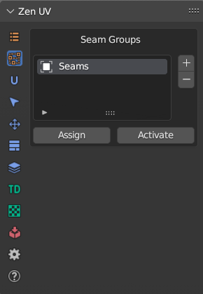

Seam Groups
Seams Groups allows to have more than one Seams Group and switch between them.
Panel

Tip
Watch the video explaining how Seam Groups works.
Add 
Add a new Seam Group to the list.
Delete 
Delete the selected Seam Group from the list.
Assign
Assign Seams to selected Seam Group.
Activate
Set Seams from selected Seam Group to selected mesh.